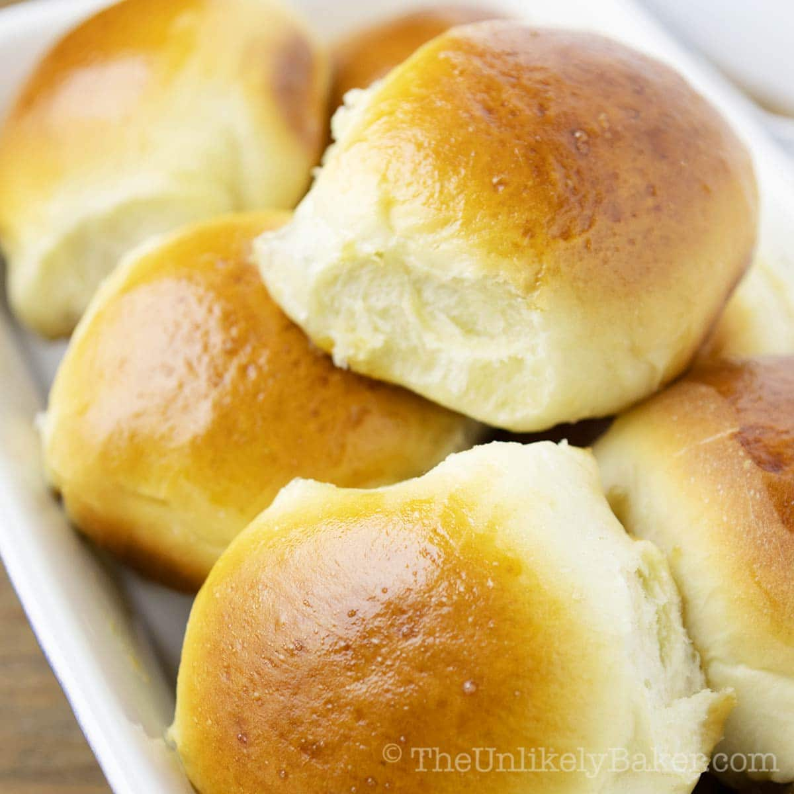
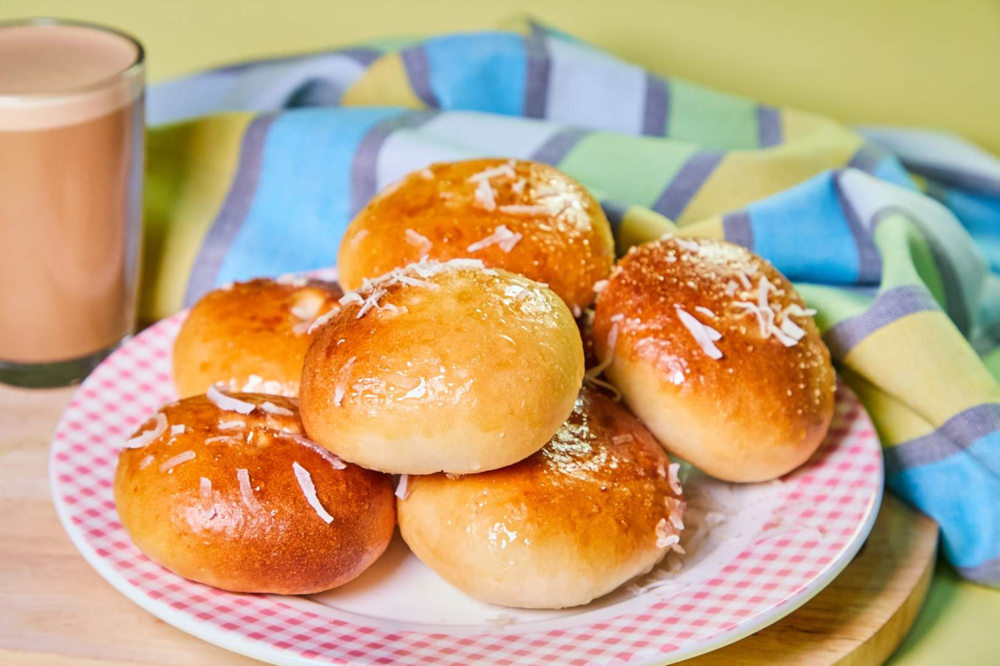
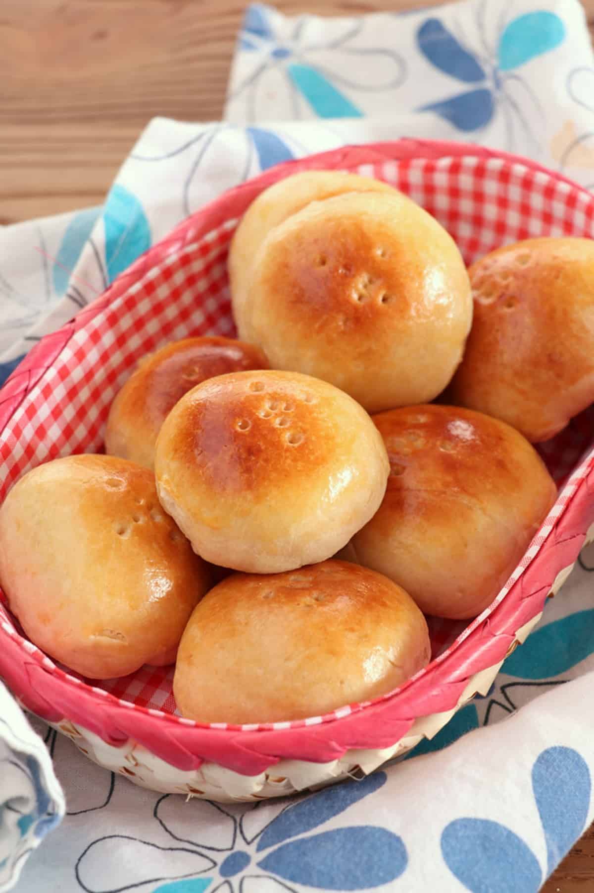
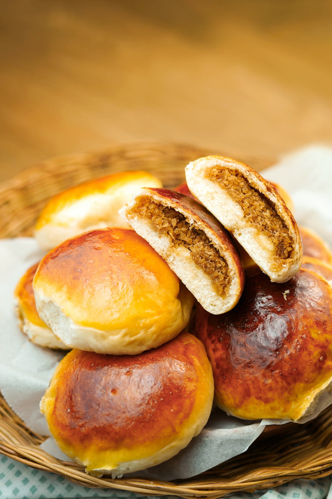
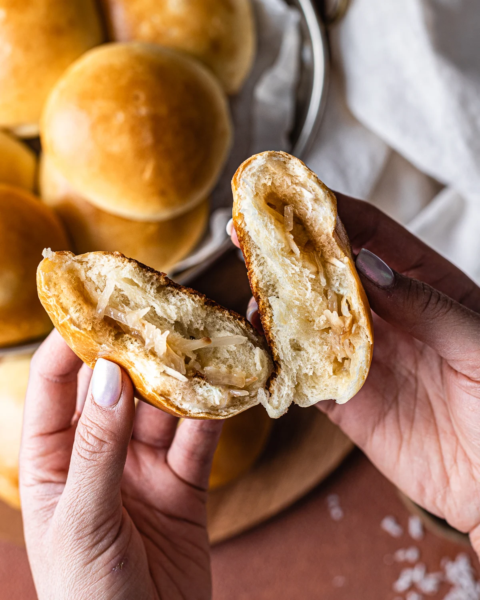

Pan De Coco





History
Ang Pan de Coco ay isang traditional Filipino bread na nagmula sa Visayas at naging popular sa buong bansa. Ang pangalan nito ay literal na “bread with coconut,” at puno ito ng sweet coconut filling sa loob ng soft, fluffy bread. Nagsimula ito bilang merienda at pasalubong sa mga lokal na panaderya, at kalaunan ay naging staple sa Filipino breakfast at snack culture. Ang Pan de Coco ay patunay ng creativity ng Pilipino sa paggamit ng abundant local ingredients tulad ng buko (coconut).
Ingredients & Notes
All-purpose flour
Yeast
Sugar
Salt
Milk
Butter
Eggs
Sweetened grated coconut
Price
₱5